弹性布局
Flex 布局
1.基本概念
flex的概念最早是在2009年被提出，目的是提供一种更灵活的布局模型，使容器能通过改变里面项目的高宽、顺序，来对可用空间实现最佳的填充，方便适配不同大小的内容区域。
2.容器属性
设置容器，用于统一管理容器内项目布局，也就是管理项目的排列方式和对齐方式。
1.flex-direction 属性
通过设置坐标轴，来设置项目排列方向。
1 | .container{ |
row（默认值）：主轴横向，方向为从左指向右。项目沿主轴排列，从左到右排列。
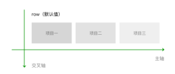
row-reverse：row的反方向。主轴横向，方向为从右指向左。项目沿主轴排列，从右到左排列。
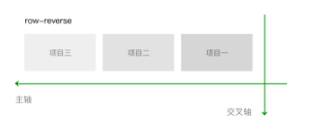
column：主轴纵向，方向从上指向下。项目沿主轴排列，从上到下排列。
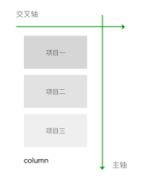
column-reverse：column的反方向。主轴纵向，方向从下指向上。项目沿主轴排列，从下到上排列。
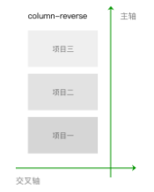
2.flex-wrap 属性
设置是否允许项目多行排列，以及多行排列时换行的方向。
1 | .container{ |
nowrap（默认值）：不换行。如果单行内容过多，则溢出容器。
wrap：容器单行容不下所有项目时，换行排列。
wrap-reverse：容器单行容不下所有项目时，换行排列。换行方向为wrap时的反方向。
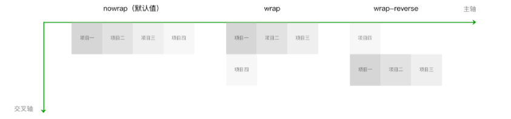
3.justify-content 属性
设置项目在主轴方向上对齐方式，以及分配项目之间及其周围多余的空间。
1 | .container{ |
flex-start（默认值）：项目对齐主轴起点，项目间不留空隙。
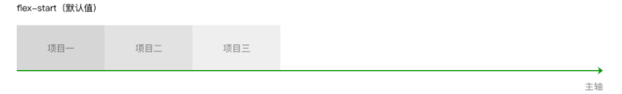
center：项目在主轴上居中排列，项目间不留空隙。主轴上第一个项目离主轴起点距离等于最后一个项目离主轴终点距离。
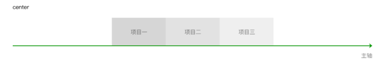
flex-end：项目对齐主轴终点，项目间不留空隙。
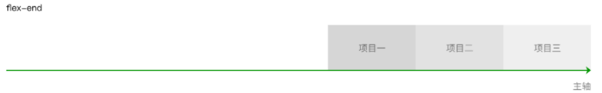
space-between：项目间间距相等，第一个项目离主轴起点和最后一个项目离主轴终点距离为0。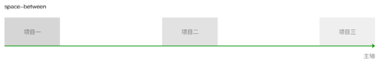
space-around：与space-between相似。不同点为，第一个项目离主轴起点和最后一个项目离主轴终点距离为中间项目间间距的一半。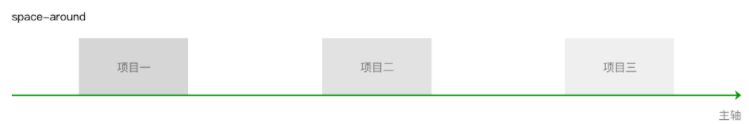
space-evenly：项目间间距、第一个项目离主轴起点和最后一个项目离主轴终点距离等于项目间间距。
4.align-items 属性
设置项目在行中的对齐方式。
1 | .container{ |
stretch（默认值）：项目拉伸至填满行高。
flex-start：项目顶部与行起点对齐。
center：项目在行中居中对齐。
flex-end：项目底部与行终点对齐。
baseline：项目的第一行文字的基线对齐。。
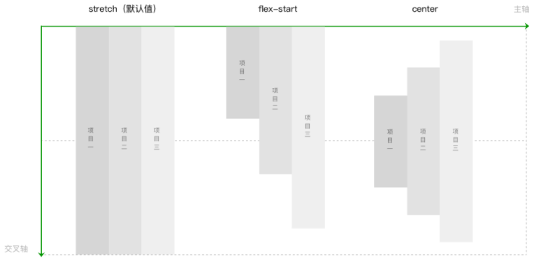
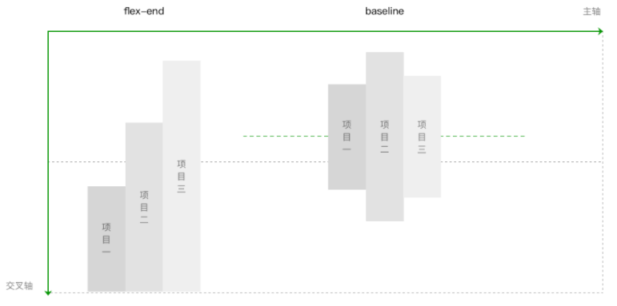
5.align-content 属性
多行排列时，设置行在交叉轴方向上的对齐方式，以及分配行之间及其周围多余的空间。
1 | .container{ |
stretch（默认值）：当未设置项目尺寸，将各行中的项目拉伸至填满交叉轴。当设置了项目尺寸，项目尺寸不变，项目行拉伸至填满交叉轴。
flex-start：首行在交叉轴起点开始排列，行间不留间距。
center：行在交叉轴中点排列，行间不留间距，首行离交叉轴起点和尾行离交叉轴终点距离相等。
flex-end：尾行在交叉轴终点开始排列，行间不留间距。
space-between：行与行间距相等，首行离交叉轴起点和尾行离交叉轴终点距离为0。
space-around：行与行间距相等，首行离交叉轴起点和尾行离交叉轴终点距离为行与行间间距的一半。
space-evenly：行间间距、以及首行离交叉轴起点和尾行离交叉轴终点距离相等。
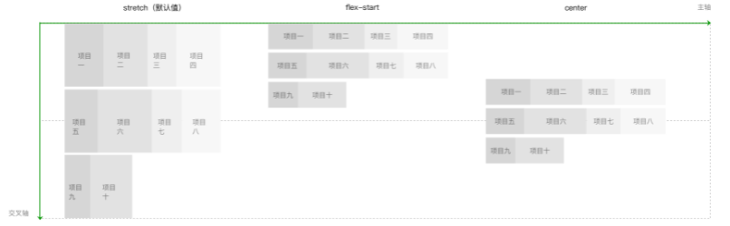
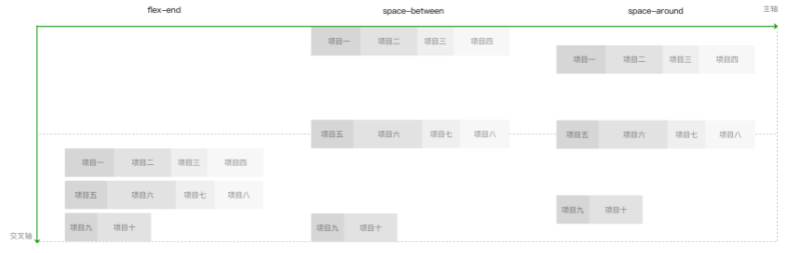
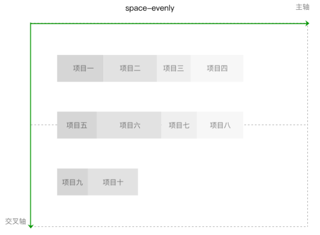
3.项目属性
设置项目，用于设置项目的尺寸、位置，以及对项目的对齐方式做特殊设置。
1.order 属性
设置项目沿主轴方向上的排列顺序，数值越小，排列越靠前。属性值为整数。
1 | .item{ |
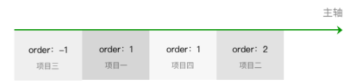
2.flex-shrink 属性
当项目在主轴方向上溢出时，通过设置项目收缩因子来压缩项目适应容器。属性值为项目的收缩因子，属性值取非负数。
1 | .item{ |
为了加深理解，我们举个例子：
一个宽度为400px的容器，里面的三个项目width分别为120px，150px，180px。分别对这项目1和项目2设置flex-shrink值为2和3。
1 | .container{ |
在这个例子中，项目溢出 400 - (120 + 150 + 180) = -50px。计算压缩量时总权重为各个项目的宽度乘以flex-shrink的总和，这个例子压缩总权重为120 * 2 + 150 * 3+ 180 * 1 = 870。各个项目压缩空间大小为总溢出空间乘以项目宽度乘以flex-shrink除以总权重：
item1的最终宽度为：120 - 50 * 120 * 2 / 870 ≈ 106px
item2的最终宽度为：150 - 50 * 150 * 3 / 870 ≈ 124px
item3的最终宽度为：180 - 50 * 180 * 1 / 870 ≈ 169px
其中计算时候值如果为小数，则向下取整。
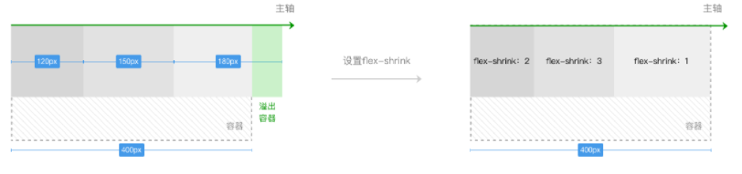
需要注意一点，当项目的压缩因子相加小于1时，参与计算的溢出空间不等于完整的溢出空间。在上面例子的基础上，我们改变各个项目的flex-shrink。
1 | .container{ |
总权重为：120 * 0.1 + 150 * 0.2 + 180 * 0.3 = 96。参与计算的溢出空间不再是50px，而是50 * (0.1 + 0.2 + 0.3) / 1 =30：
item1的最终宽度为：120 - 30 * 120 * 0.1 / 96 ≈ 116px
item2的最终宽度为：150 - 30 * 150 * 0.2 / 96 ≈ 140px
item3的最终宽度为：180 - 30 * 180 * 0.3 / 96 ≈ 163px
3.flex-grow 属性
当项目在主轴方向上还有剩余空间时，通过设置项目扩张因子进行剩余空间的分配。属性值为项目的扩张因子，属性值取非负数。
1 | .item{ |
为了加深理解，我们举个例子：
一个宽度为400px的容器，里面的三个项目width分别为80px，120px，140px。分别对这项目1和项目2设置flex-grow值为3和1。
1 | .container{ |
在这个例子中，容器的剩余空间为 400 - (80 + 120 + 140) = 60px。剩余空间按 60 / (3 + 1 + 0) = 15px进行分配：
item1的最终宽度为：80+ (15 * 3) = 125px
item2的最终宽度为：120 + (15 * 1) = 135px
item3的最终宽度为：140 + (15 * 0) =140px
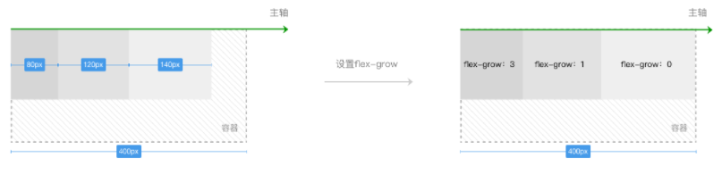
需要注意一点，当项目的扩张因子相加小于1时，剩余空间按除以1进行分配。在上面例子的基础上，我们改变各个项目的flex-grow。
1 | .container{ |
在这个例子中，容器的剩余空间为 400 - (50 + 80 + 110) = 160px。由于项目的flex-grow相加0.1 + 0.3 + 0.2 = 0.6小于1，剩余空间按 160 / 1 = 160px划分。例子中的项目宽度分别为：
item1的最终宽度为：50 + (160 * 0.1) = 66px
item2的最终宽度为：80 + (160 * 0.3) = 128px
item3的最终宽度为：110 + (160 * 0.2) = 142px
4.flex-basis 属性
当容器设置flex-direction为row或row-reverse时，flex-basis和width同时存在，flex-basis优先级高于width，也就是此时flex-basis代替项目的width属性。
当容器设置flex-direction为column或column-reverse时，flex-basis和height同时存在，flex-basis优先级高于height，也就是此时flex-basis代替项目的height属性。
需要注意的是，当flex-basis和width（或height），其中一个属性值为auto时，非auto的优先级更高。
1 | .item{ |
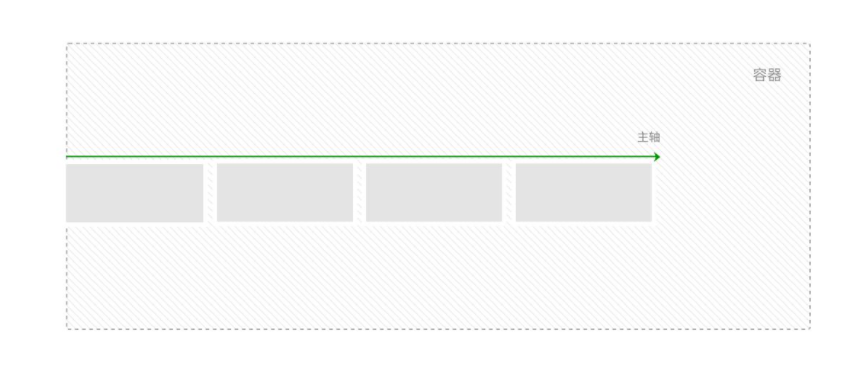
5.flex 属性
是flex-grow，flex-shrink，flex-basis的简写方式。值设置为none，等价于00 auto。值设置为auto，等价于1 1 auto。
1 | .item{ |
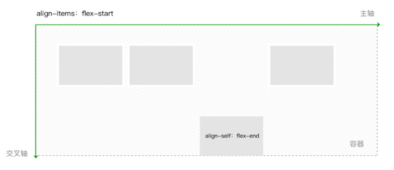
 微信
微信 支付宝
支付宝